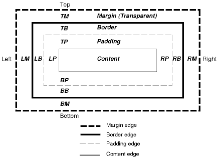
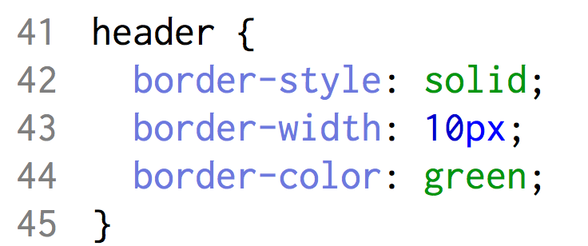
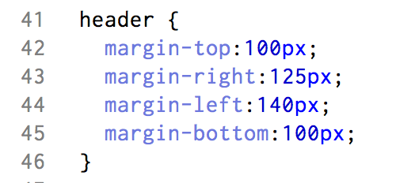

CSS Borders, Margins and Padding
When you’re working in CSS, you’ll find yourself using the border, margin, and padding properties to have full control over the elements on your webpage. Below is a diagram of the box model that should help you understand these properties.
First off, let's talk about the border. The border denotes the boundaries of an element. It surrounds the padding of the content, but we’ll get into that later. While the border is always there, you can make it visible with some simple css code, see the examples below.
You can adjust the border properties by changing the color value, wether the border is dashed, solid, dotted, etc. and the overall thickness of the border in pixels.
Now that we’ve explained the border, let’s move onto the margin. You can use the margin properties to control the white space around your elements…basically playing around with the margin will dictate the size of the space outside of an element’s border. One important thing to remember is that margins are completely invisible and as a result are not affected by the background-color of an element.
There are four properties that you can use to specify the parameters of a margin, and they’re pretty intuitive.
Adjusting any of these properties will put distance between the border of an element and the direction that you selected. For example, if you used margin-bottom: 10px, your element would move up by 10 pixels. You can use the following values for the margin properties shown above: auto - this will allow the browser to automatically calculate the margin for you length - this let’s you specify the margin in pixels % - specify the margin as the percentage of the element’s width. inherit - this will specify that the margin should be inherited from the parent element.
Finally, you can use shorthand to speed up the process when working with margins. Instead of going through the tedious:
You can instead use: margin: 100px 150px 125px 200px Where each number will apply to it's relative property: top, right, left, bottom.
Similarly you can use three values, i.e. margin: 100px 150px 125px where 100px will apply to the top margin, 150px to right/left, and 125px the bottom. Two values, i.e. margin: 100px 50px where 100px will apply to the top and bottom margins and 50px to the right and left margins. And even one value, i.e. margin: 25px where 25px will be applied to the top, bottom, right and left margins. Make sense? Good!
Finally we come to padding. Padding properties define the space between an element’s content and it’s border, basically clearing the area around the content but inside the border of an element. Unlike margins, padding is affected by the background color of an element, as it is inside the border. The properties are exactly the same as with margins, using padding-top, padding-right, padding-left, and padding-bottom. The values are the same as well, as is the shorthand.